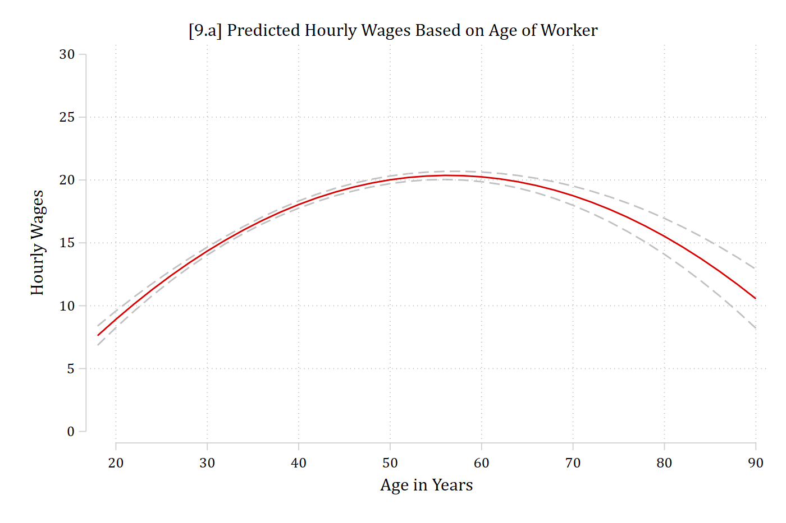
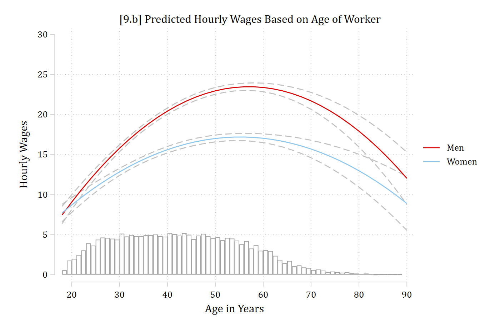
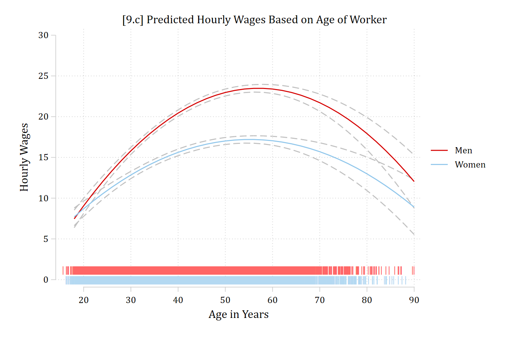
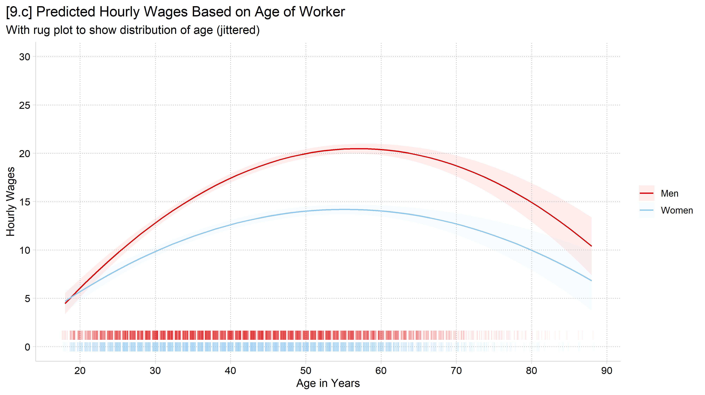
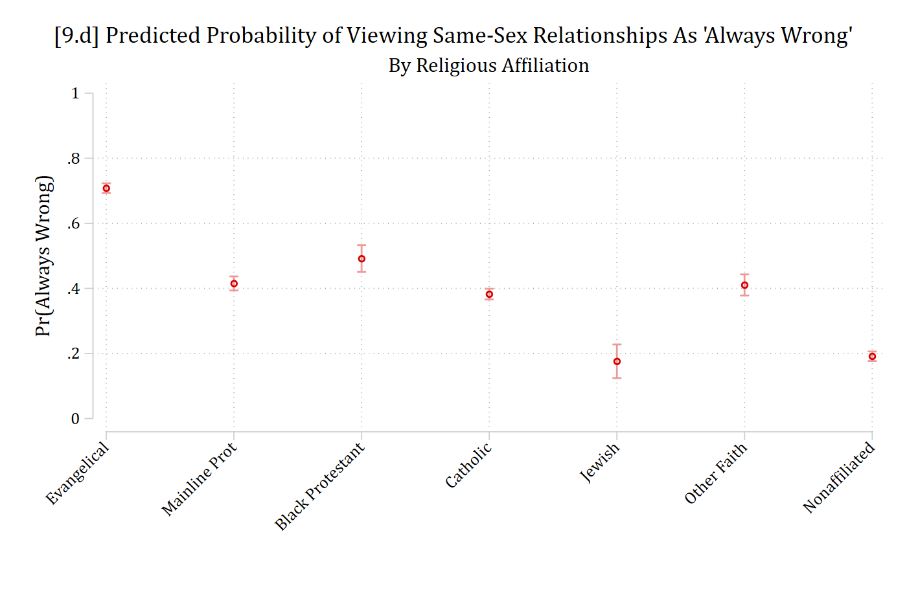
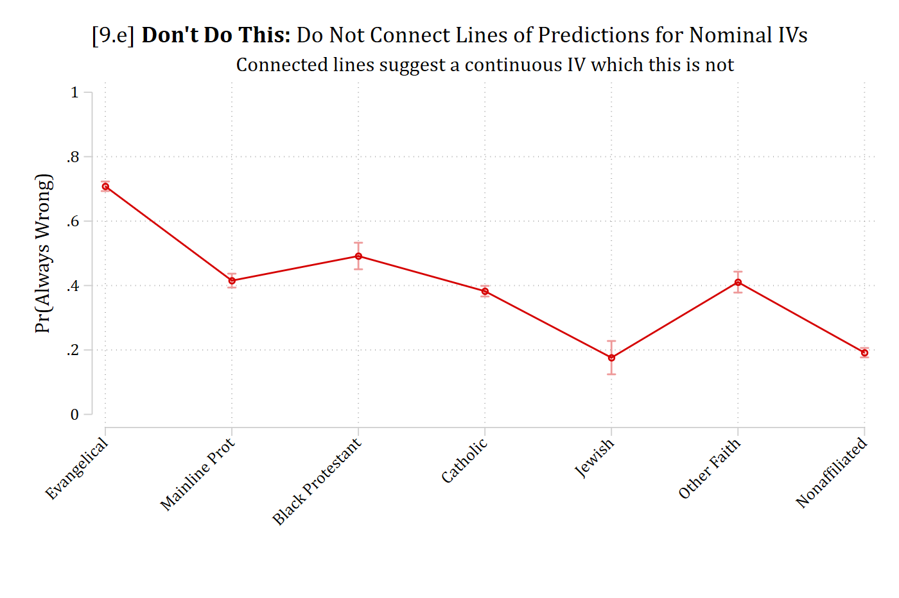
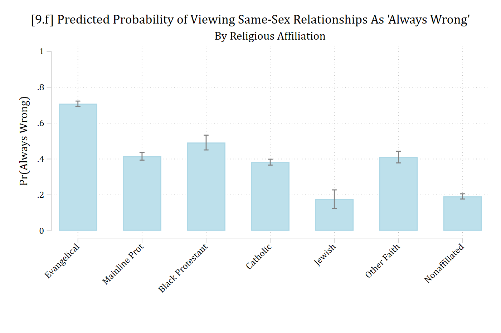
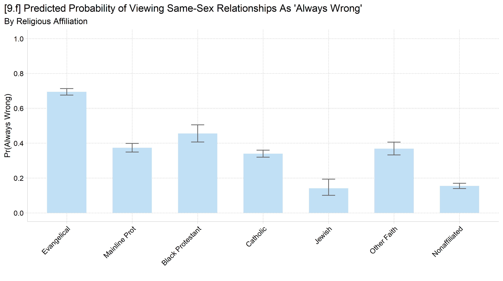
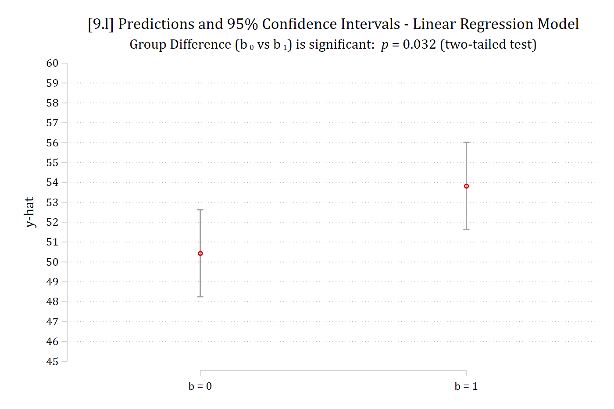
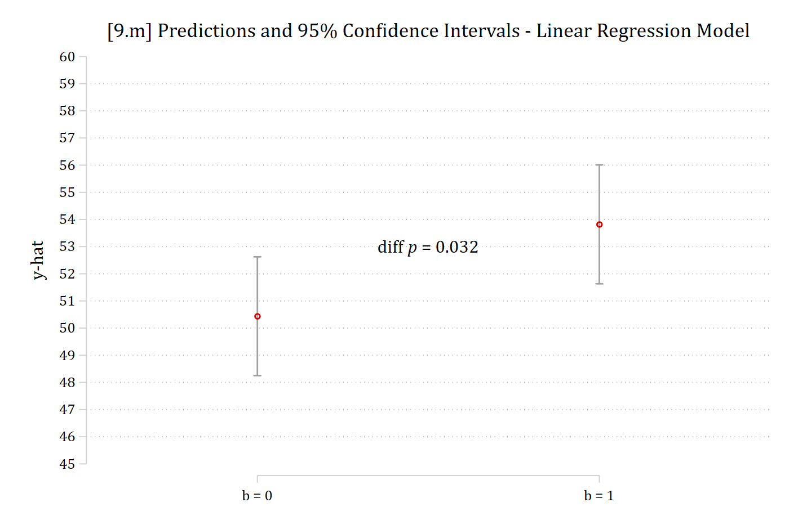

// Linear regression model with age and age-squaredquiregress wages c.age##c.age i.woman i.college i.racequi margins, at(age=(18(2)90))// 9.a - Plot predictions for agemarginsplot, plotopts(msym(none)) xlab(20(10)90) ylab(0(5)30) /// recastci(rline) ciopts(lpat(dash) col(gs12)) ///ytitle("Hourly Wages") xtitle("Age in Years") ///title("[9.a] Predicted Hourly Wages Based on Age of Worker")
Variables that uniquely identify margins: age

library(foreign) # load Stata datasetslibrary(ggplot2) # main graphics packagelibrary(dplyr) # data manipulation toolslibrary(marginaleffects) # predictions and marginal effectslibrary(cleanplots) # Mize's graphics scheme## Use cleanplots colors, markers, lines, and theme for all graphs ##cleanplots_defaults()theme_update(plot.title.position ="plot") # titles start at left edge of graph# General Social Survey Datagss <-droplevels(read.dta("https://tdmize.github.io/data/data/gss.dta"))gss_emp <-droplevels(filter(gss, year >=2000, employed ==1))# Linear regression model with age and age-squaredwage_mod <-lm(wages ~poly(age, 2, raw =TRUE) + woman + college + race, data = gss_emp)# 9.a - Plot predictions for ageplot_predictions(wage_mod, condition ="age") +labs(x ="Age in Years", y ="Hourly Wages",title ="[9.a] Predicted Hourly Wages Based on Age of Worker") +scale_x_continuous(breaks =seq(20, 90, 10)) +scale_y_continuous(breaks =seq(0, 30, 5)) +coord_cartesian(ylim =c(0, 30))
// Allow the age effect to differ for men and womenquiregress wages c.age##c.age##i.woman i.college i.racequi margins, at(age=(18(2)90) woman=(0 1))// 9.b - Histogram to show distribution of agemarginsplot, plotopts(msym(i)) /// recastci(rline) ciopts(lpat(dash) col(gs12)) ///ytitle("Hourly Wages") xtitle("Age in Years") ///title("[9.b] Predicted Hourly Wages Based on Age of Worker") ///addplot(hist age, width(1) lcol(gs10) /// fcol(none) yaxis(2) yscale(range(0 0.15) off alt axis(2)) ///legend(order(3 "Men" 4 "Women")) xlab(20(10)90) ylab(0(5)30))
Variables that uniquely identify margins: age woman

# Allow the age effect to differ for men and womenwage_int <-lm(wages ~poly(age, 2, raw =TRUE) * woman + college + race, data = gss_emp)# 9.b - Add a histogram of age to the bottom of the plotplot_predictions(wage_int, condition =c("age", "woman")) +geom_histogram(data = gss_emp, binwidth =1, fill =NA, color ="gray70",aes(x = age, y =after_stat(count /max(count) *5)),inherit.aes =FALSE) +labs(x ="Age in Years", y ="Hourly Wages", color ="", fill ="",title ="[9.b] Predicted Hourly Wages Based on Age of Worker") +scale_x_continuous(breaks =seq(20, 90, 10)) +scale_y_continuous(breaks =seq(0, 30, 5)) +coord_cartesian(ylim =c(0, 30))
// Generate variables to make rugs on plotgen pipe = "|"if age != . // What rug looks likegen agerand = age + rnormal(0,1) // "jitter" age
(56 missing values generated)
gen where = 0 // Where on y-axis to put 1st ruggen where2 = 1.2 // Where on y-axis to put 2nd rug// 9.c - Rug plots: separate rugs for men and women (faded colors)marginsplot, plotopts(msym(i)) /// recastci(rline) ciopts(lpat(dash) col(gs12)) ///ytitle("Hourly Wages") xtitle("Age in Years") ///title("[9.c] Predicted Hourly Wages Based on Age of Worker") ///addplot(scatter where2 agerand if woman == 0, /// ms(none) mlabel(pipe) mlabcol(red*.6) mlabpos(0) || ///scatter where agerand if woman == 1, /// ms(none) mlabel(pipe) mlabcol(eltblue*.6) mlabpos(0) ///legend(order(3 "Men" 4 "Women")) xlab(20(10)90) ylab(0(5)30))
Variables that uniquely identify margins: age woman

# 9.c - Rug plot: "jitter" age so can better see where the data is; colors fadeddat_rug <- insight::get_data(wage_int) # estimation sampledat_rug$age_j <- dat_rug$age +runif(nrow(dat_rug), -0.4, 0.4) # jitterdat_rug$rug_y <-ifelse(dat_rug$woman =="Men", 1.2, 0) # men's rug above women'splot_predictions(wage_int, condition =c("age", "woman")) +geom_point(data = dat_rug, aes(x = age_j, y = rug_y, color = woman), shape ="|",size =3, alpha =0.06, inherit.aes =FALSE, show.legend =FALSE) +labs(x ="Age in Years", y ="Hourly Wages", color ="", fill ="",title ="[9.c] Predicted Hourly Wages Based on Age of Worker",subtitle ="With rug plot to show distribution of age (jittered)") +scale_x_continuous(breaks =seq(20, 90, 10)) +scale_y_continuous(breaks =seq(0, 30, 5)) +coord_cartesian(ylim =c(0, 30))

Plotting predictions for nominal vs continuous variables
For IVs treated as continuous: sort the x-axis left to right by values of the IV, make predictions at most or all levels of the IV, and connect the lines between the predictions
This helps visually mirror the assumption of continuity in how you modeled the IV
For IVs treated as nominal: x-axis sorting is often arbitrary*, dots or bars should clearly represent distinct predictions being made for each grouping, and there should be no lines connecting the predictions
Lines connecting predictions suggest continuity, whereas nominal IVs have no ordering information
Be consistent in ordering across figures, tables, etc.
For ordinal variables modeled as nominal, use the logical order in tables and graphs (e.g., “high school degree” left of “college degree”)
| Same Sex Relationship
Opinion of Same-Sex | Always Wrong
Relationships | Not Alway Always Wr | Total
---------------------+----------------------+----------
always wrong | 0 24,162 | 24,162
almost always wrong | 1,868 0 | 1,868
wrong only sometimes | 2,739 0 | 2,739
not wrong at all | 11,501 0 | 11,501
---------------------+----------------------+----------
Total | 16,108 24,162 | 40,270
*Omitting Catholic -- Only including surveys beginning in 2000quilogit samesexAW ib4.reltrad i.woman i.college i.race3 c.faminc c.age ///ifyear >= 2000*Get predictions for each categorymargins reltrad
// 9.d - Use recast(scatter) for a dot plot for a nominal IVmarginsplot, recast(scatter) ylab(0(.2)1) ciopts(col(*.4)) xtitle(" ") /// xlab(, angle(45)) ytitle("Pr(Always Wrong)") ///title("[9.d] Predicted Probability of Viewing Same-Sex Relationships As 'Always Wrong'", size(medium)) ///subtitle("By Religious Affiliation")
Variables that uniquely identify margins: reltrad

# General Social Survey Data (religious tradition ex)cda_gss <-droplevels(read.dta("https://tdmize.github.io/data/data/cda_gss.dta"))# DV: same-sex relationships are always wrong (1) vs not (0)cda_gss$samesexAW <-as.numeric(cda_gss$samesexop =="always wrong")gss_rel <- cda_gss %>%filter(year >=2000) %>%filter(!is.na(samesexAW), !is.na(reltrad), !is.na(woman), !is.na(college),!is.na(race3), !is.na(faminc), !is.na(age)) %>%droplevels()logit_rel <-glm(samesexAW ~ reltrad + woman + college + race3 + faminc + age,family = binomial, data = gss_rel)# 9.d - The default plot for a nominal IV is a dot plot (which is good)plot_predictions(logit_rel, condition ="reltrad") +labs(x ="", y ="Pr(Always Wrong)",title ="[9.d] Predicted Probability of Viewing Same-Sex Relationships As 'Always Wrong'",subtitle ="By Religious Affiliation") +scale_y_continuous(breaks =seq(0, 1, .2), limits =c(0, 1)) +scale_x_discrete(guide =guide_axis(angle =45))
// 9.e - DON'T DO THIS! marginsplot's default connects lines for a nominal IVmarginsplot, ylab(0(.2)1) ciopts(col(*.4)) xtitle(" ") /// xlab(, angle(45)) ytitle("Pr(Always Wrong)") ///title("[9.e] {bf:Don't Do This:} Do Not Connect Lines of Predictions for Nominal IVs", size(medium)) ///subtitle("Connected lines suggest a continuous IV which this is not")
Variables that uniquely identify margins: reltrad

# 9.e - DON'T DO THIS! Connected lines suggest a continuous IV, which this is notpred_rel <-plot_predictions(logit_rel, condition ="reltrad", draw =FALSE)ggplot(pred_rel, aes(x = reltrad, y = estimate, group =1)) +geom_line() +geom_point(size =3) +geom_errorbar(aes(ymin = conf.low, ymax = conf.high), width = .2) +labs(x ="", y ="Pr(Always Wrong)",title ="[9.e] Don't Do This: Do Not Connect Lines of Predictions for Nominal IVs",subtitle ="Connected lines suggest a continuous IV which this is not") +scale_y_continuous(breaks =seq(0, 1, .2), limits =c(0, 1)) +scale_x_discrete(guide =guide_axis(angle =45))
// 9.f - A bar chart is an equally good alternativemarginsplot, recast(bar) plotopts(barw(.6) color(ltblue)) ylab(0(.2)1) ciopts(color(gs8)) ///xtitle(" ") xlab(, angle(45)) ytitle("Pr(Always Wrong)") ///title("[9.f] Predicted Probability of Viewing Same-Sex Relationships As 'Always Wrong'", size(medium)) ///subtitle("By Religious Affiliation")
Variables that uniquely identify margins: reltrad

# 9.f - A bar chart is an equally good alternativeggplot(pred_rel, aes(x = reltrad, y = estimate)) +geom_col(fill =cleanplots_colors("ltblue", bars =TRUE), width = .6) +geom_errorbar(aes(ymin = conf.low, ymax = conf.high), width = .2, color ="gray40") +labs(x ="", y ="Pr(Always Wrong)",title ="[9.f] Predicted Probability of Viewing Same-Sex Relationships As 'Always Wrong'",subtitle ="By Religious Affiliation") +scale_y_continuous(breaks =seq(0, 1, .2), limits =c(0, 1)) +scale_x_discrete(guide =guide_axis(angle =45))

Confidence intervals and statistical significance
“Fun” game: guess which of the following group differences (b0 vs. b1) are significant at the 95% level (two-tailed test)
The dependent variable is continuous
The independent variable (b) is binary with two values (0 and 1)
The test for significance can be*:
A t-test
An ANOVA
A linear regression model
A Wald test for equality of predictions
*Fun fact: these are all identical tests in this simple case…
# Simulated data: two groups (b = 0 vs b = 1) with a true difference of 5# R and Stata draw different random numbers; this seed gives the same pattern as Stata'sset.seed(43940)sim <-data.frame(b =factor(rep(c(0, 1), each =500)))sim$y10 <-50+5* (sim$b ==1) +rnorm(1000, 0, 10)sim$y20 <-50+5* (sim$b ==1) +rnorm(1000, 0, 20)sim$y25 <-50+5* (sim$b ==1) +rnorm(1000, 0, 25)sim$y30 <-50+5* (sim$b ==1) +rnorm(1000, 0, 30)# Plot predictions and CIs for the two groups; optionally show the test of the differenceci_plot <-function(y, label, show_p =FALSE) { m <-lm(reformulate("b", y), data = sim) p <-avg_comparisons(m, variables ="b")$p.valueggplot(avg_predictions(m, variables ="b"), aes(x = b, y = estimate)) +geom_point(size =3) +geom_errorbar(aes(ymin = conf.low, ymax = conf.high), width = .1, color ="gray60") +scale_x_discrete(labels =c("b = 0", "b = 1")) +scale_y_continuous(breaks =seq(45, 60, 1)) +coord_cartesian(ylim =c(45, 60)) +labs(x ="", y ="y-hat",title =paste0("[", label, "] Predictions and 95% Confidence Intervals - Linear Regression Model"),subtitle =if (show_p) paste0("Group Difference (b0 vs b1) is significant: ",ifelse(p < .001, "p < 0.001", paste("p =", round(p, 3)))," (two-tailed test)"))}# 9.g - Error term has SD of 30ci_plot("y30", "9.g")
coefplot, vertical ciop(recast(rcap) col(gs10)) ylab(45(1)60) /// xlab(1 "b = 0" 2 "b = 1") ytitle("y-hat") ///title("[9.l] Predictions and 95% Confidence Intervals - Linear Regression Model") ///subtitle("Group Difference (b{sub: 0} vs b{sub: 1}) is significant: {it: p} = 0.032 (two-tailed test)")

# 9.l - Error term has SD of 25avg_comparisons(lm(y25 ~ b, data = sim), variables ="b")
Estimate Std. Error z Pr(>|z|) S 2.5 % 97.5 %
3.44 1.6 2.16 0.031 5.0 0.315 6.57
Term: b
Type: response
Comparison: 1 - 0
ci_plot("y25", "9.l", show_p =TRUE)
Advice on confidence intervals and standard errors
Most people—including PhD researchers—do not understand what overlapping confidence intervals indicate about statistical significance
You need to recognize this when making graphics to present your findings
Importantly, when confidence intervals do not overlap (e.g., on the 1st plot above) this indicates that the group difference (i.e., b0 vs b1) is significant
However, when the confidence interval does overlap this may or may not indicate the group difference is non-significant*: you must test for this directly. AsBelia et al. (2005)gently put it:
// 9.m - Add significance info to the graph using the text( ) option*NOTE: specify the y-x coordinates for where to place textcoefplot, vertical ciop(recast(rcap) col(gs10)) ylab(45(1)60) /// xlab(1 "b = 0" 2 "b = 1") ytitle("y-hat") ///title("[9.m] Predictions and 95% Confidence Intervals - Linear Regression Model") ///text(53 1.5 "diff {it:p} = 0.032")

# 9.m - Add the significance test of the difference to the graph itselfm25 <-lm(y25 ~ b, data = sim)p25 <-avg_comparisons(m25, variables ="b")$p.valueci_plot("y25", "9.m") +annotate("text", x =1.5, y =53, label =paste0("diff p = ", round(p25, 3)))